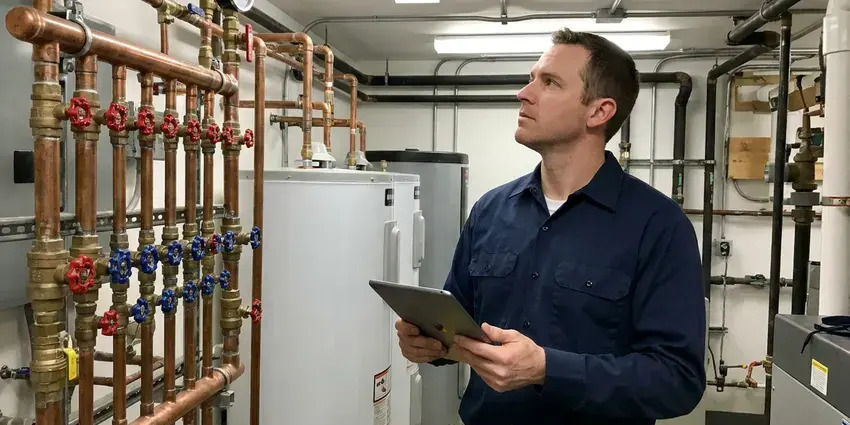

Water Damage Restoration in Las Vegas, NV
For reliable water damage restoration in Las Vegas, NV, trust the experienced team at FMR Plumbing. We limit damage and prevent long-term issues.
- Fast Emergency Response
- Odor & Mold Prevention
- Insurance Claim Support
- Commercial Drying Equipment

Water on the Floor? Get Restoration Help Right Away in Las Vegas, NV.
We document every step with photos and moisture readings to support your insurance claim.
Reliable Water Damage Restoration for Homes in Las Vegas, NV
At FMR Plumbing, we understand the urgency of water damage in Las Vegas, NV. Our certified technicians are equipped to assess, extract, dry, and restore your property, heading off further issues like mold growth or structural decay.
Our expertise includes:
- Drywall, baseboard and cabinet removal and replacement after drying
- Mold prevention and remediation protocols.
- Emergency leak repair and water extraction from floors and carpet

Additional Plumbing Maintenance Services in Las Vegas, NV
Our maintenance and specialty plumbing services in Las Vegas, NV protect your home year-round and extend the life of every system.




Professional commercial plumbing, Las Vegas

Customers
Why Choose FMR Plumbing for Water Damage Restoration in Las Vegas, NV?
Using one company for the plumbing repair and the restoration saves time and confusion. You get a single point of contact and a clear record for your insurer.
- Powerful Equipment, We deploy powerful pumps, industrial-grade dehumidifiers, and air movers for rapid drying.
- Certified Technicians, Our team is IICRC certified, meaning they meet the highest standards for restoration and cleaning.
- Claim Support, Photos, readings and itemized invoices help your insurance claim go smoothly.
Citywide Coverage
We provide water damage restoration in every neighborhood of Las Vegas, from older single-story homes to newer two-story houses and condos. Our crews carry extraction and drying equipment on every truck.
Experienced Team
The FMR Plumbing team is regularly trained on the latest water damage mitigation and restoration techniques, so your property receives the most up-to-date and efficient service available in Las Vegas, NV.
Safety-First Approach
Removed materials are disposed of properly, and rebuild work follows local building and plumbing codes. Permits are pulled for repairs that require them.
Trusted Certified Las Vegas Plumbing Services Professionals
At FMR Plumbing, we take pride in providing licensed, certified plumbing services throughout Las Vegas, NV. Backed by leading industry credentials, our experienced plumbers combine technical skill with genuine customer care. Whether it is repair, installation, or maintenance, we follow strict safety and quality standards to deliver long-lasting results you can trust.
Call Us Now PHCC Plumbing Contractor Recognition
PHCC Plumbing Contractor Recognition Better Business Bureau (BBB) Accreditation
Better Business Bureau (BBB) Accreditation Angi Certified Pro
Angi Certified Pro ISO 9001 Quality Management Certification
ISO 9001 Quality Management CertificationComplete Water Damage Restoration Services in Las Vegas, NV
Advanced Leak Detection and Repair in Las Vegas, NV
Often, water damage starts with a hidden leak. Our technicians in Las Vegas, NV use leak detection technology, such as acoustic sensors and thermal imaging, to locate the source of water intrusion without invasive demolition. Once detected, we perform lasting repairs to prevent recurring water damage, saving you from future headaches and expensive repairs.

Insurance Claim Assistance for Water Damage in Las Vegas
Navigating insurance claims for water damage can be confusing. FMR Plumbing in Las Vegas can assist you by providing detailed documentation of the damage and restoration process. We work with many insurance providers, helping to speed up the claims process so you receive proper coverage for the needed repairs and restoration work.
Kitchen and Appliance Leak Restoration in Las Vegas
Dishwashers, refrigerator ice maker lines and sink supply lines can leak slowly under cabinets for weeks. By the time you notice, cabinet bases and subfloor may be swollen. We repair the leak, remove cabinet toe kicks to dry beneath and replace damaged panels. Stainless braided lines and leak sensors help prevent repeat damage.
Basement and Crawl Space Water Cleanup in Las Vegas
Basements and crawl spaces are particularly vulnerable to water damage, which can lead to foundation issues and leaks. Clay soils that swell when watered and shrink when dry can shift slabs and buried drain lines over time. Our team in Las Vegas specializes in cleaning and drying these hard-to-reach areas. We remove contaminated materials, sanitize surfaces, and put solutions in place to prevent future water intrusion, protecting your home's foundation and air quality.
Burst Pipe Water Damage Repair in Las Vegas, NV
A burst pipe can cause serious water damage in a short amount of time. FMR Plumbing not only repairs the broken pipe but also manages the full scope of water damage restoration in Las Vegas, NV. We will shut off the water source, extract the water, dry the affected areas, and perform any needed repairs to walls, ceilings, or flooring. Our quick action limits the extent of the damage and helps restore your plumbing system.
Water Damage Restoration Costs and Insurance in Las Vegas, NV
Restoration costs depend on how much area is affected, the water category and how long materials stayed wet. Small single-room jobs cost much less than whole-floor projects with flooring replacement. Many homeowners policies cover sudden and accidental water damage but not long-term leaks. We provide detailed photos, moisture logs and estimates to back up your claim.
Insurance Claim Assistance in Las Vegas, NV
Navigating insurance claims for water damage can be confusing. FMR Plumbing assists homeowners in Las Vegas, NV by documenting the damage with detailed reports and photos, which helps speed up the claims process. We work with most major insurance providers, providing clear communication and transparent estimates. While we don't file claims for you, our thorough documentation can significantly help in getting your claim approved and securing the coverage you deserve.

Mold Prevention After Water Damage in Las Vegas, NV
Mold can begin growing on damp drywall and wood within 24 to 48 hours. Even in dry weather, wall cavities and under-cabinet spaces stay damp without proper equipment. We monitor moisture levels and apply antimicrobial treatment where needed. If mold is already present, we remove affected materials and recommend remediation for larger areas.
Water Damage Restoration Near Me in Las Vegas, NV
When you search for 'water damage restoration near me' in Las Vegas, NV, FMR Plumbing is your reliable local choice. We are very familiar with the homes and businesses in our community and are committed to providing prompt, effective service right where you need it.
When water is spreading across your floor, you need a crew that is close by. Our teams are stationed throughout the area with extraction and drying equipment ready to go. That means faster arrival and less damage to your home.
FMR Plumbing at a Glance
- Licensed and insured plumbers serving Las Vegas, NV
- Same-day appointments and 24/7 emergency response
- Clear written estimates, no hidden fees
- 4.8-star rated by 903+ Nevada customers
Las Vegas Map
Las Vegas Information
- Population
- 660,929
- Area codes
- 702/725/775
- Service area
- Las Vegas and communities within 40 miles
- Nearby
- Summerlin South, Spring Valley, Winchester, North Las Vegas
Water damage restoration is especially important for homes in Las Vegas, NV, since heavy rains and damp conditions can quickly lead to structural issues and mold growth if not addressed promptly and professionally.
Expert Services
Trust our professionals for reliable FMR Plumbing solutions in Las Vegas, NV.
Our Specialized Plumbing Services in Las Vegas, NV
At FMR Plumbing, we provide a complete range of plumbing services across Las Vegas, NV. From leak detection to full system installations, our team ensures fast, precise, and affordable service for both residential and commercial properties. Explore our core services below:


How Our Water Damage Restoration Process Works in Las Vegas, NV
FMR Plumbing follows a proven multi-step process for water damage restoration in Las Vegas, from initial assessment to final restoration.
Request a Quote
Contact FMR Plumbing immediately at (725) 360-1766 when you discover water damage. We will gather initial information and dispatch a team to your location quickly.
Damage Assessment
Our certified technicians will arrive to assess the extent of the water damage, identify the source, and formulate a complete restoration plan. This includes using moisture meters to detect hidden saturation.
Water Extraction
We use powerful, industrial-grade equipment to remove all standing water from your property. This key step reduces drying time and prevents secondary damage.
Frequently Asked Questions About Water Damage Restoration in Las Vegas
The cost of water damage restoration in Las Vegas, NV varies widely depending on the extent of the damage, the size of the affected area, and the type of water involved. Minor water extraction and drying might range from $500 to $3,000, while extensive damage requiring structural repairs and mold remediation could cost anywhere from $5,000 to over $20,000. We provide a detailed estimate after our first assessment.
We use a range of professional-grade drying equipment, including high-capacity air movers, industrial dehumidifiers such as low-grain refrigerant and desiccant models, and professional moisture meters. These tools allow us to quickly and thoroughly dry affected structures and materials, so all hidden moisture is addressed. Brands like Dri-Eaz, Abatement Technologies, and Concrobium are commonly used in our work.
To prevent future water damage, regularly inspect plumbing for leaks, maintain your roof and gutters, keep drainage flowing away from your foundation, and consider installing smart water leak detectors. Freezing weather is uncommon in the southern desert of Nevada, though occasional cold nights can still damage exposed outdoor pipes. Insulating pipes in unconditioned spaces and knowing your home's foundation type can also guide smart upgrades.
FMR Plumbing offers 24/7 emergency response for water damage. Our goal is to arrive at your Las Vegas property within a few hours of your call, as prompt action is critical in limiting damage and preventing further issues like mold growth.
Right after discovering water damage, turn off the water source if possible, and turn off electricity to affected areas. Contact a professional water damage restoration company like FMR Plumbing immediately. Remove valuable items and furniture from wet areas. Do not use a regular vacuum to remove water, as it creates an electrical hazard.
Water damage can stem from any plumbing brand. We commonly see issues with water heaters from brands like Rheem or Bradford White, washing machines from Whirlpool or Samsung, dishwashers from Bosch or GE, and supply lines from various faucet brands. Our focus is on repairing the damage, regardless of the brand.
Most homes dry in three to five days with commercial dehumidifiers and air movers. Dense materials like hardwood or concrete slab may take longer. We monitor moisture daily until everything reaches acceptable levels.
Household fans can help with small surface spills but rarely dry wall cavities, subfloors or cabinets fully. Hidden moisture can lead to mold and structural damage. Professional equipment and moisture monitoring give better results.
What People Are Saying About Our Plumbing Experts?

Robert G.
The trenchless sewer replacement saved our front yard. They walked us through the camera inspection footage first so we knew exactly what we were paying for.
Sewer Line Replacement · Winchester, NV
Mark T.
When our office needed drain cleaning, FMR Plumbing provided quick, reliable service. The plumber arrived on time and made sure every drain flowed perfectly before leaving. Very satisfied.
Drain Cleaning · Winchester, NVJames P.
Our commercial plumbing system had a leak under the sink, and FMR Plumbing handled it professionally. The plumbers arrived quickly and restored everything without disruption to our customers.
Commercial Plumbing · Sunrise Manor, NV
Daniel K.
A pipe burst at 11 pm and they actually answered. The plumber showed up within the hour, shut everything down, and had us back to normal the next morning. Could not ask for more.
Emergency Plumbing · Paradise, NV
Laura S.
I scheduled a water heater replacement, and the team made the process smooth and affordable. The new unit works perfectly, and they cleaned up after completing the job.
Water Heater Replacement · Winchester, NV
Emily R.
I called FMR Plumbing for plumbing repair, and the technician was fast, polite, and thorough. They explained the problem clearly and fixed it the same day. I will definitely hire them again. Highly recommended!
Plumbing Repair · Winchester, NV